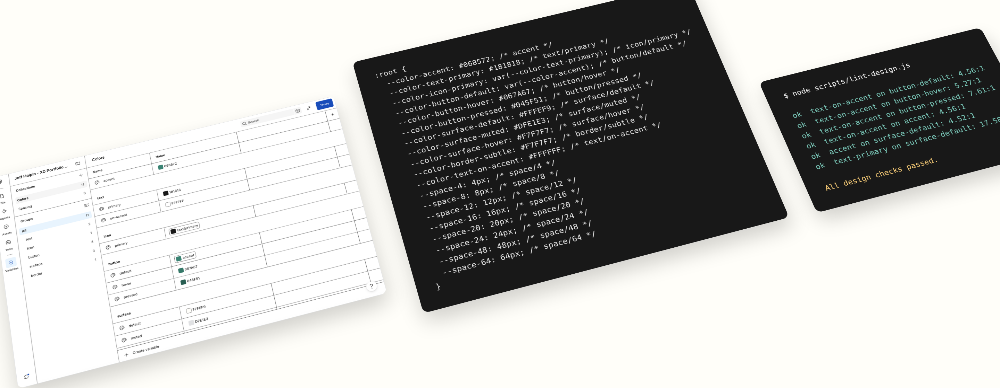
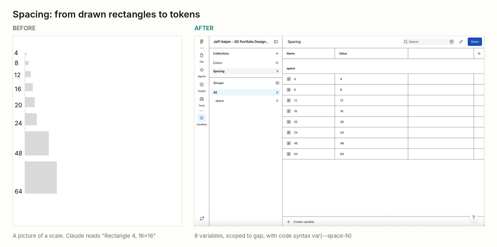
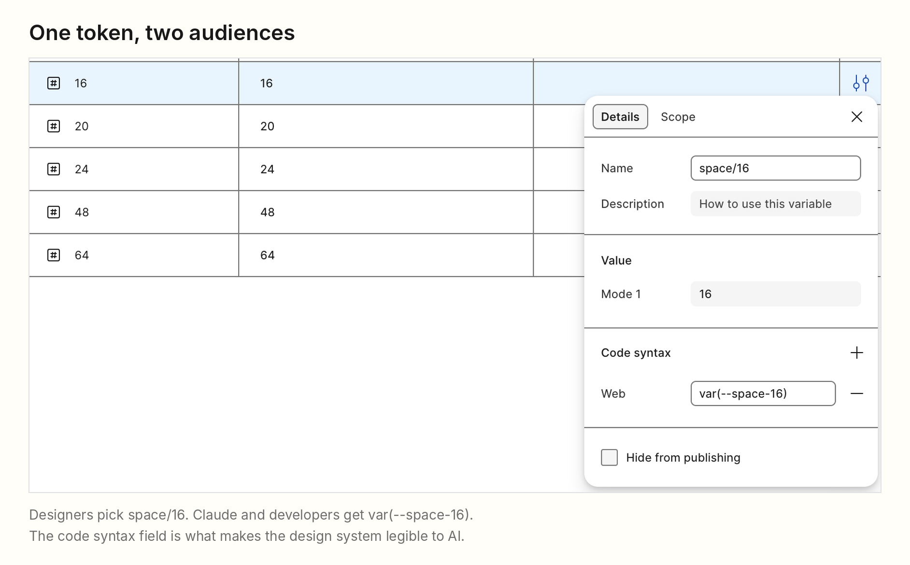
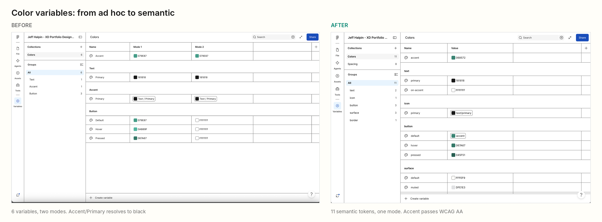
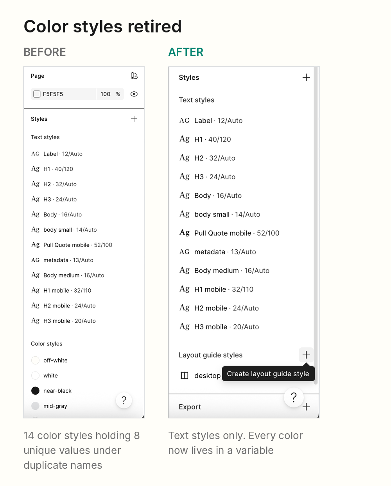
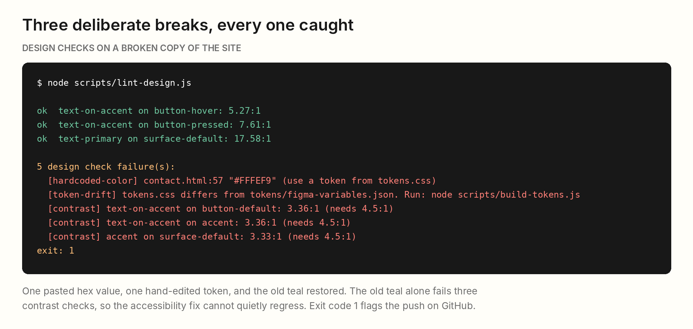

I rebuilt my portfolio's design system so that an AI agent could read it, and in the process found and fixed an accessibility failure in my own components.
Working with Claude through the Figma MCP server, I turned 14 loose color styles and a drawn spacing chart into 19 named tokens, connected them to jeffhalpin.com, and added automated checks that run on every push.
This project builds on Phase I, a Figma-to-code color sync tool I built in early 2026. Read the Phase I case study.
In early 2026 I built a small sync tool to close the gap between my Figma design system and my front end HTML and CSS. It pulled published color styles through the Figma REST API and wrote them into the homepage's Tailwind config. It worked, but it only moved colors, only to one page, and it copied values rather than names. A change in Figma still meant hunting through markup for the hex values the tool never touched.
As a result, Figma held 14 color styles for only 8 distinct colors. Off-white and Surface/Default were the same value under two names, and so were mid-gray and Text/Secondary.
bg-[#FFFEF9] alone appeared 55 times.I was heading the right direction, but in order to maintain a clear line of sight for me and for any designer or agent I would be working with, I needed to simplify and standardize my approach.
Designer and design engineer. I made the design decisions and identified areas of focus. Claude ran the audits and the scripted changes (using Figma Skill), I reviewed each change before it ran.
I connected Claude to my design file through the Figma MCP server and asked it to read the system back to me. What a person understands at a glance, an agent often cannot.
These minor inconsistencies are the stuff of nightmares when a user returns to a file after weeks on other work. In my case, my tendency to leave deprecated styles in my .fig files, is confusing to anyone picking up my file. Claude acted as a QC resource, which was impressive, and handled the cleanup and verification of syntax within my file.
The tools taught their own lesson too. One MCP call listed a single page in the file with no components, when a clear “components” page existed. As always, the user must verify the work of any partner, human or AI, before approvals.
“The real problem is not whether machines think but whether men do.”
At every stage of this project, we are seeking to implement a seamless process that takes human input and delivers machine-readable, reproducible designs.
The fix was to encode every decision as data with a name, a purpose and a code equivalent, so that people and agents read the same thing.
I created eight number variables, space/4 through space/64. Claude then scoped each one to gap and padding, so it only appears where spacing belongs, and now uses my system of predictable syntax code is expecting.


Figma's code syntax field is what an agent writes when it turns a design into code. Left empty, Claude guesses or hardcodes 16px. Filled in, it writes my token. “Accent / Primary” became icon/primary, still black. Renaming in Figma doesn't break the link to the designs that use it, so all 16 icons kept their color and gained an honest name.
Fourteen overlapping color styles became 11 colors, each named for its job, like surface/default or button/hover. Two colors can share a value and still keep separate names if they might change separately later. 94 layers switched over with no visual change. The tradeoff is more names to learn.


My own buttons failed WCAG AA. The label was light gray on teal at 2.56:1, and 16px regular text needs 4.5:1. I have shipped dozens of products to comply with WCAG AA accessibility, and my portfolio still missed this. It is exactly the drift a design system is supposed to prevent.
There were two honest fixes. Keep the teal and switch to dark labels, or darken the brand teal and keep white labels. I chose to darken the token. Claude searched for the lightest version of my teal that passes both as a button fill under white text and as text on my off-white background, which landed on #068572. Hover now gets darker instead of lighter, because a lighter hover could never pass with white text.
| Element | Before | After |
|---|---|---|
| Button label, default | 2.56:1 | 4.56:1 |
| Button label, hover | 1.91:1 | 5.27:1 |
| Button label, pressed | 4.02:1 | 7.61:1 |
| Active chip label | 3.36:1 | 4.56:1 |
| Teal text on off-white | 3.33:1 | 4.52:1 |
The fix happened at the token level. I changed “accent” once, pointed “button/default” at it instead of a duplicate hex, and every chip, label and button followed without a single component edit.
jeffhalpin.com now takes every color from Figma by name. Claude reads my variables through MCP and writes them, with their code names and aliases, to a JSON export in the repo. A short Node script turns that export into tokens.css, and all 7 pages map their Tailwind colors to those tokens instead of to pasted hex values.
Design checks run on every push
A cleanup only matters if it holds, so every push to the site now runs three design checks on GitHub.
To prove the checks work, we broke a copy of the site three ways. We pasted a hex value back into the contact page, hand-edited a token, and reverted the teal to its old value. The run reported 5 failures and exited with an error, and the old teal alone tripped three contrast failures. The accessibility fix cannot quietly regress.

Right now a failed check flags a bad push without blocking it, because GitHub Pages still publishes. Making it a hard gate is a small next step.
By implementing AI-legible structure and naming conventions to my Figma file, I was now able to confidently manage an entire platform with conversational AI.
My Figma approach was modernized and failsafes were put into place to ensure human and AI were on the same page:
With these changes in place, design reviews and approvals were simplified.
Treating an AI agent as a real consumer of my design system changed what “done” meant. A system is finished when it can be read, not just seen, for all users. Honest names, scoped tokens and one source of truth help the next designer as much as they help Claude.
MCP made the work fast and auditable. Claude could count every use of a style across five pages before anything changed, move 94 layers in minutes, and prove the result with a second pass. That evidence is what let me approve changes to a file I care about.
The judgment stayed human. Whether the black icons were intentional, which teal represents my brand, and when two identical values deserve two names were all my calls. Names proved the most fragile part. While capturing screenshots for this page, I accidentally renamed space/4 to space/var(--space-4). A future export would have shipped a broken token, and none of my three checks would have caught it.
Self [jeffhalpin.com]
AI Design Engineering
Information Architecture
Content Strategy
Product Design
Design Engineer
Product Designer
2026
IA Recommendations
Lightweight prototyping
Wireframes
Component Specifications